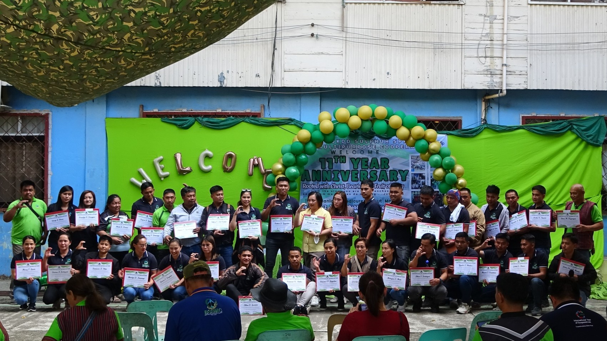

Featured Story
BSSMC continues to strengthen member-focused services for the community
The cooperative remains committed to improving access to services, supporting local development, and strengthening community participation through programs centered on sustainability and shared progress.